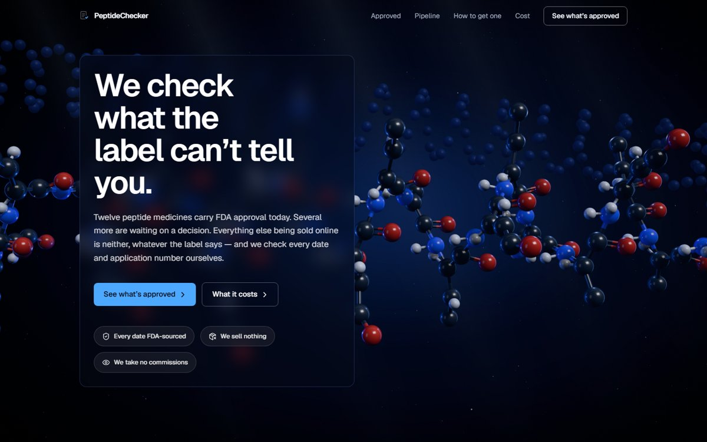
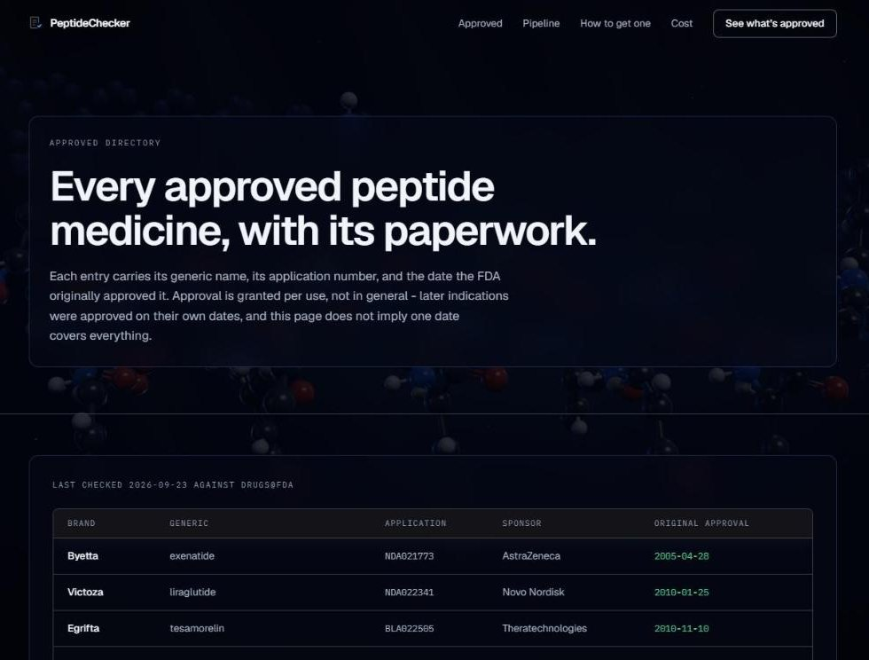
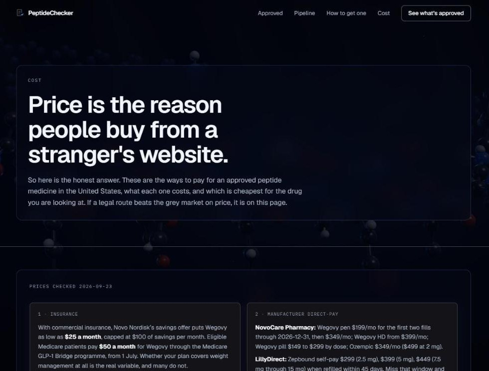

ENT 3114 · New Venture Lab · Presentation 1
A free website that shows which peptide medicines are FDA approved, what they cost, and the safe, legal ways to get them.

The live PeptideChecker home page
02 · The Problem
They jump between Google, Reddit, YouTube and TikTok and still aren't sure.
Online sellers post "lab test" papers that are easy to copy or make up.
Most people don't know FDA approved versions exist through a doctor or telehealth.
03 · Who It's For
Already buying "research" peptides online for muscle and recovery. Hardest to switch to a legal option.
Want to lose weight or feel better. More open to a doctor or telehealth if the price is fair.
04 · Hypothesis
We think buyers will switch to an FDA approved route when two things happen: they see the price side by side with what they pay now, and they can see exactly how we check things and that nobody pays us to rank them.
05 · Test Results
"I usually have to look through a bunch of different websites and reviews."
"I'd definitely use something like that. Right now I have to piece all of that information together myself."
"I wouldn't want it to just be a list where companies pay to be ranked higher."
"I'd rather pay a little more for something I actually trusted."
Rank the online sellers and earn money from the ones that passed.
Point people to FDA approved medicines and licensed telehealth instead. No ranking sellers, no money from them.
06 · Our Solution
FDA approved peptide medicines
waiting on FDA approval
taken from sellers

The "Approved" page lists every FDA approved peptide
07 · Competitors
| Site | What it does | Shows legal options? |
|---|---|---|
| Finnrick | Lab tests sellers' peptides and rates them | No |
| Telehealth clinics | A doctor prescribes and a pharmacy ships | Only their own |
| Reddit / Google | Free advice from other users | Not reliably |
| PeptideChecker | Shows what's approved, the cost, and how to get it | Yes, all of them |
08 · How It Works
Search a peptide and see if it's FDA approved, using the FDA's own records.
See the price through a doctor, the maker, or telehealth.
Pick the route that fits your budget.

The "Cost" page compares every legal route
09 · Customer Relationships & Sales Channels
10 · Key Activities, Resources & Partners
11 · Cost Structure
About $0. Free website hosting, no store, no inventory, no employees.
Keeping the info current, doing customer interviews, and working with partners.
12 · Critical Factors
At least one telehealth company has to agree to partner with us.
Buyers have to actually choose the legal option, not just the cheapest.
We need our own data to show the site is worth trusting.
13 · Overall Recommendation
Find out if people will really pick the legal option once they see the price.
This takes the longest and it's how the site makes money.
Check 20 sellers' lab reports and post the results with dates and screenshots.